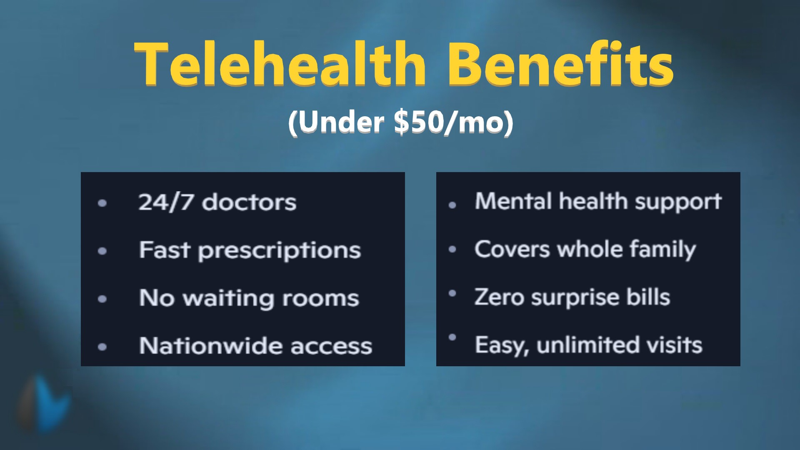

The Math Congress Fears. The Movement They Can't Stop.
▶ The 60-second PHIERS brief — watch this first
What Is PHIERS?
Politicians respond to organized power.
PHIERS organizes the public.
PHIERS isn't a policy campaign. It's a way for regular Americans to give Congress documented direction — and replace the ones who ignore it.
We started with nothing but a truth too heavy to carry alone — and a belief that millions of Americans were feeling it too. What began as one spark has become a shared recognition, a shared frustration, and now a shared movement. We're building something grounded, disciplined, and impossible to ignore. And if you're here, you're already part of it.
When millions of people say the same thing — on the record — Congress has to act. We don't ask people to yell louder. We help them line up behind one clear demand.
We use math and collective power to force Congress to stabilize healthcare, protect coverage, and stop using people's lives as bargaining chips.
America is getting squeezed from all sides — rising costs, unstable jobs, political gridlock, and falling trust. These problems are connected. They need a connected solution.
Healthcare is just the start. PHIERS is built as a permanent coordination system — a way for Americans to organize around practical solutions across the economy, national security, and more. When one part stabilizes, the others get stronger.
Telehealth Is the Answer to the Affordability Crisis
$600 telehealth replaces $10,000 insurance.
That's not a slogan — it's the math Congress doesn't want you to know.
80%
of Americans never use hospitalization or specialty care. They're paying $10,000/year for protection they don't need.
$600/yr
Telehealth delivers 80% of healthcare needs — 24/7 access, no gatekeepers, no denials — at 1/14th the cost.
8–13 mo.
From Congressional authorization to universal coverage. Congress has the authority under the ACA. They can do this tomorrow.
Telehealth is care. Insurance is protection. Most Americans are paying for catastrophic coverage they never use — while skipping routine care they can't afford. PHIERS fixes the system by separating the two: $600 telehealth for the 80%. Insurance as the backstop for the rest.
Our one demand to Congress: add $600 telehealth as a covered benefit under the ACA Exchange and CMS. That single change stabilizes costs for 234 million Americans — and saves roughly $2.7 trillion a year. [CMS National Health Expenditure Data]
📱 See the Full Telehealth Case →How PHIERS Works
Four steps. No ideology. Just your voice on record.
Sign the petition + take the survey — Your name, your position, on the public record.
1,500 signatures in YOUR DISTRICT — Forces a mandatory town hall. Congress can't ignore it.
3.5% participation (11.6M people) — No campaign in history has ever failed after hitting this number. The Civil Rights Movement, Indian Independence, the People Power Revolution — all crossed this line. All won. [Chenoweth, Harvard Kennedy School]
Replace elected officials who refuse to do the Will of the People — No exceptions.
Once we hit critical mass, universal healthcare becomes inevitable — and free.
The savings already exist. The math already works. The only thing that's been missing is the organized public pressure to force Congress to act. That's exactly what 3.5% delivers.
The Math / Economic Impact

Everything you actually need — under $50/month. No waiting rooms. No surprise bills. No gatekeepers.
5D Solutions
Fixing healthcare generates the savings to solve everything else.
$2.7 trillion a year — freed from a broken system — is the fuel for the five connected problems facing this country: healthcare, jobs, economy, politics, and peace. PHIERS is built to solve all five. Healthcare is where we start.
⚡ Our first major leverage moment: March 28
If you want to turn that energy into lasting change, document your direction before you march. Protests create visibility. PHIERS creates leverage. You need both.
Start Where You Are
Pick the page that fits your question right now.
Where You Go Next
Telehealth vs Insurance — $600 replaces $10,000. Why telehealth is the fix Congress is sitting on.
Simple Math — The math that makes this undeniable. $600 in, $10,000 savings out.
5D Solutions — Five connected problems. One connected answer. Here's how it all fits together.
Leverage — How 1,500 signatures in your district forces Congress to hold a town hall.
Roadmap — The sequence from where we are to national stabilization.
The Crisis — What's actually happening and why Congress hasn't fixed it.
End the War — Why the wars are an economic threat — and how PHIERS builds the leverage to stop them.
Take Action — When you're ready to put your name on the record. This is where it counts.
Healthcare Is Where We Get the Leverage. War Is Why We Can't Wait.
Unauthorized wars are costing the United States over $1 billion every single day — with no declaration, no mandate, and no end in sight. Most economists agree: prolonged military conflicts of this scale, layered on top of existing debt and global instability, carry a real risk of triggering global economic collapse.
PHIERS understands the sequence all too well. You don't fix everything at once — you fix things in stages, in the right order, with real leverage behind each step.
Stage 1 — Fix healthcare.
Prove PHIERS works. Generate $2.7 trillion in savings. Show Congress that organized constituents cannot be ignored.
Stage 2 — Transfer that leverage.
Use the same organized, documented, district-by-district pressure to demand Congress end the unauthorized wars — and make accountable decisions with the people's money.
Protest without leverage gets nothing. PHIERS builds the leverage. Healthcare first — because that's the proof of concept that opens every door that follows.
The same organized public that stabilizes healthcare becomes the most powerful force to demand an end to unauthorized wars — preventing the $1 billion/day drain on our future.
The Only Thing Missing Is You
PHIERS is a public-interest movement — not a company, not a product. It works when people participate.